Plan treningowy – Gym
1. Wprowadzenie
- Sprzęt: hantle regulowane (2×10 kg).
- Częstotliwość: 2–3 razy w tygodniu.
Struktura:
- Rozgrzewka (5 min)
- Trening siłowy (plecy + klatka)
- Interwały spalające (10–12 min)
- Rozciąganie (5 min)
2. Ćwiczenia siłowe
A) Plecy
- Wiosłowanie hantlami w opadzie – 3×10–12
Instrukcja: pochyl się w pasie, trzymaj plecy prosto, podciągaj hantle do bioder.
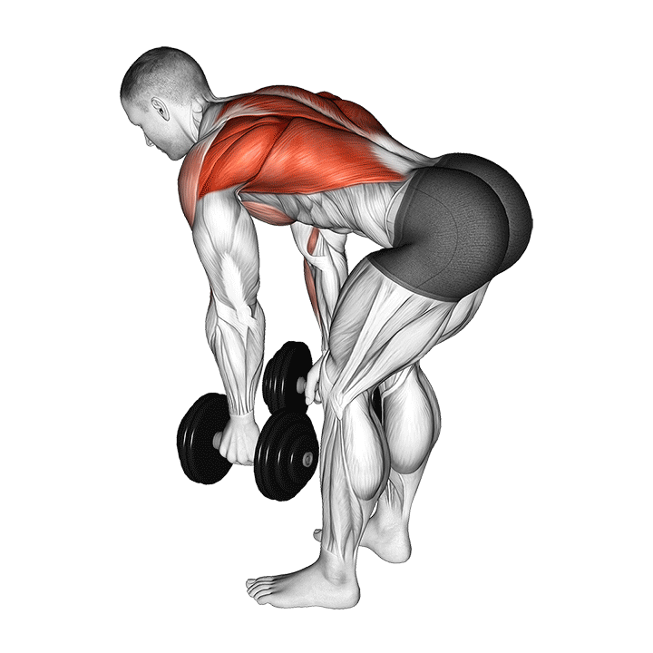
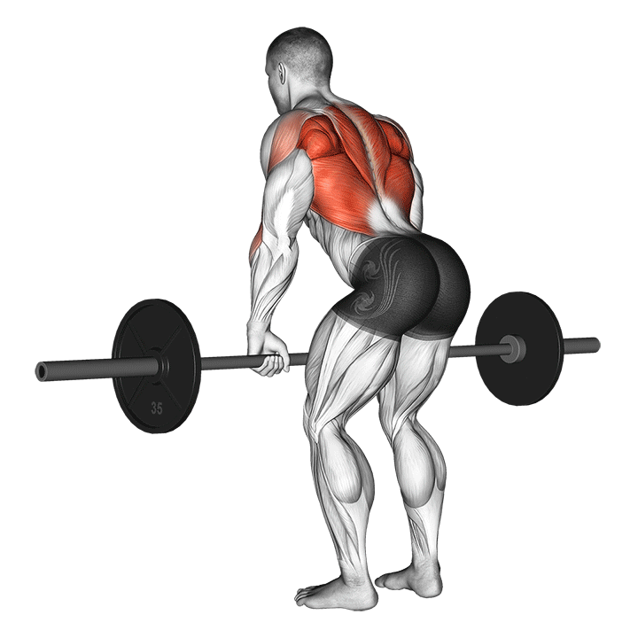
- Martwy ciąg rumuński – 3×8–10
Wskazówka: lekko ugięte kolana, ruch z bioder.

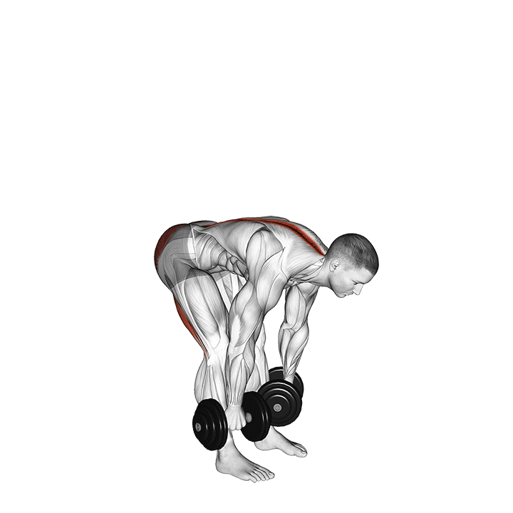
- Shrugsy (wzruszanie ramion) – 3×12–15
Trzymaj hantle wzdłuż ciała, unosząc barki jak najwyżej.
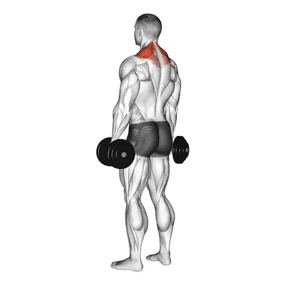
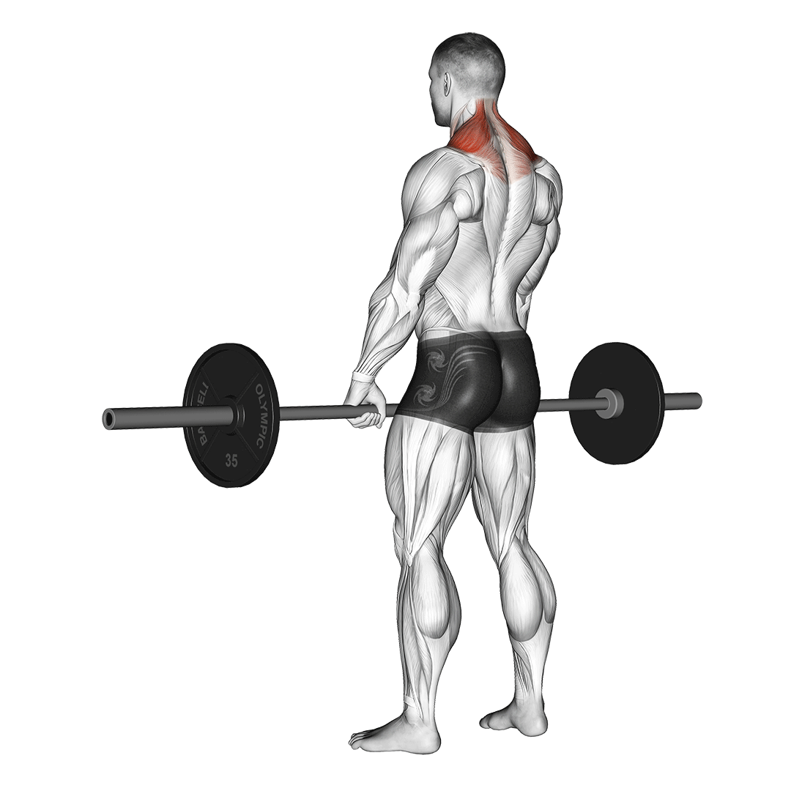
B) Klatka piersiowa
- Wyciskanie hantli (na podłodze lub ławce) – 3×8–12
Opuszczaj hantle powoli, wypychaj mocno w górę.
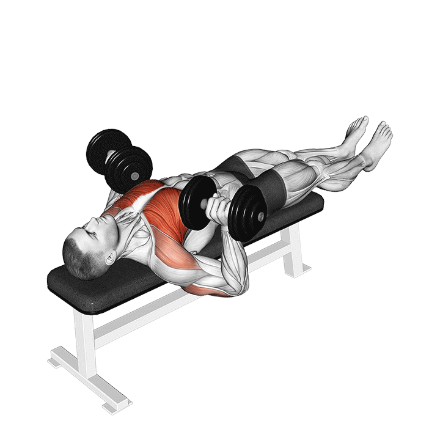
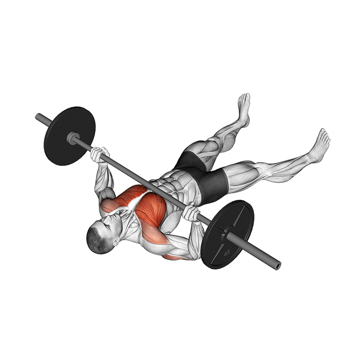
- Rozpiętki hantlami – 3×10–12
Łokcie lekko zgięte, ruch szeroki, kontrolowany.

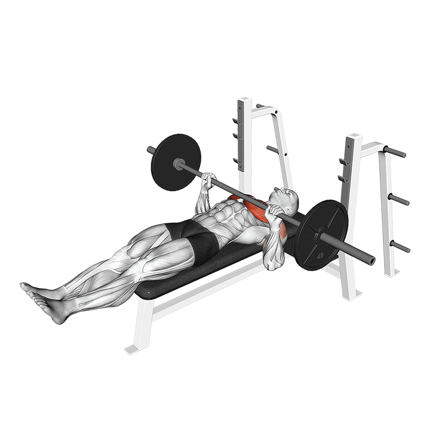
- Pompki (klasyczne lub wąskie) – 3×do upadku mięśniowego
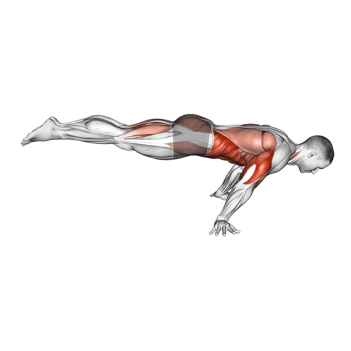
3. Interwały spalające (3 rundy)
- Przysiady z hantlami – 30 s
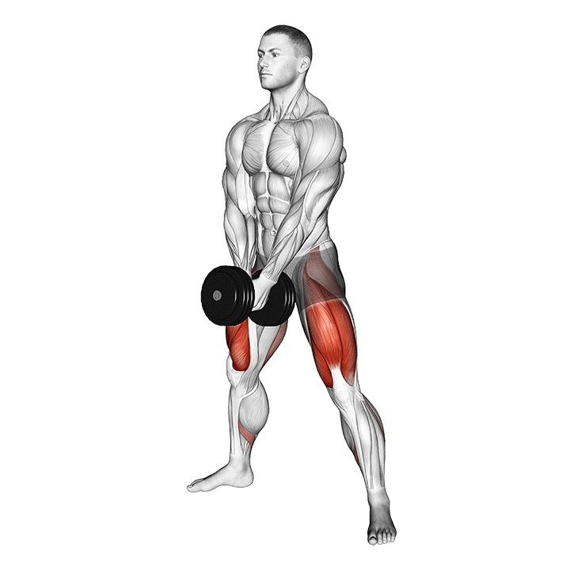
- Burpees – 30 s
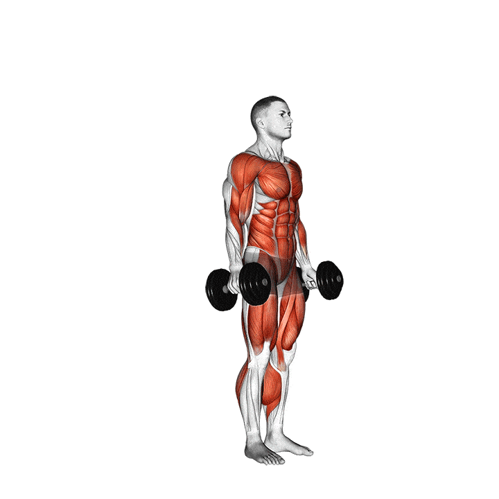
- Mountain climbers – 30 s
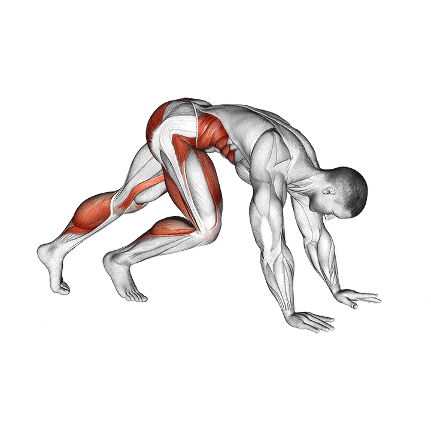
- Renegade row (deska + wiosłowanie) – 30 s
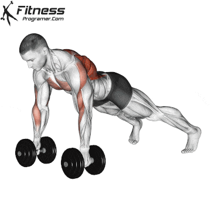
4. Rozciąganie (cool down)
- Rozciąganie klatki przy ścianie – 30 s/strona
- Skłony w przód (rozciąganie pleców) – 30 s
- Koci grzbiet / krowa – 5 powtórzeń
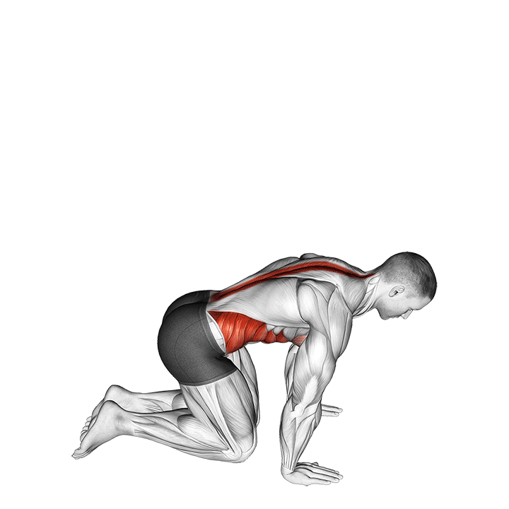
5. Tabela skrócona
| Ćwiczenie | Serie | Powtórzenia/Czas |
|---|
| Wiosłowanie | 3 | 10–12 |
| Martwy ciąg rumuński | 3 | 8–10 |
| Shrugsy | 3 | 12–15 |
| Wyciskanie hantli | 3 | 8–12 |
| Rozpiętki | 3 | 10–12 |
| Pompki | 3 | Do upadku |
| Interwały (4 ćwiczenia × 3r) | - | 30s każde |
Gify poglądowe ćwiczeń znajdziesz wpisując ich nazwy w wyszukiwarce.